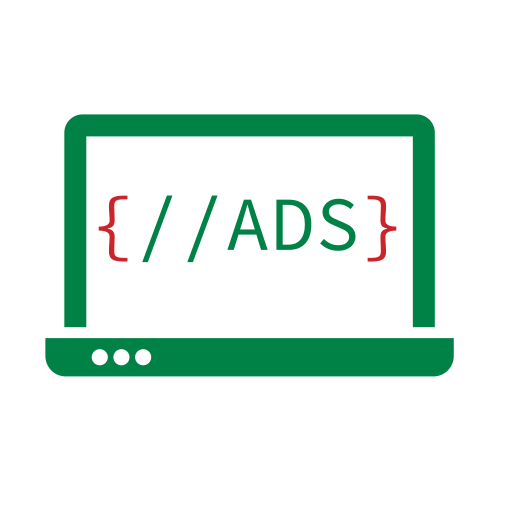

Curso completo de Analise e Desenvolvimento de Sistemas
capacite-se no desenvolvimento de sistemas com linguagens de programação mais usadas nos dias de hoje.

Análise de sistemas é a atividade que tem como finalidade a realização de estudos de processos a fim de encontrar o melhor caminho racional para que a informação possa ser processada. Os analistas de sistemas estudam os diversos sistemas existentes entre hardwares (equipamentos), softwares (programas) e o usuário final.
Os seus comportamentos e aplicações são desenvolvidos a partir de soluções que serão padronizadas e transcritas da forma que o computador possa executar.
O curso é voltado para a criação de programas, softwares e sistemas para as empresas. As etapas do projeto de sistemas de software, como análise, projeto, teste, gestão, implantação e manutenção de sistemas de informação também estão entre os aprendizados da graduação.
O Curso:
Aqueles que escolhem seguir o caminho do desenvolvimento serão preparados e treinados em procedimentos operacionais padronizados, dotados de conhecimentos do software e hardware para seu trabalho.
Duração:
4 (quatro) semestres.
| Disciplina | Carga Horaria | Faltas |
|---|---|---|
| Fundamentos de Banco de Dados | 80 Horas | 20 |
| Introdução a Internet das Coisas - IOT | 80 Horas | 20 |
| Linguaguem de Programação I | 80 Horas | 20 |
| Lógica de Programação | 80 Horas | 20 |
| Matemática Aplicada | 80 Horas | 20 |
| Disciplina | Carga Horaria | Faltas |
|---|---|---|
| Ambiente de Desenvolvimento e Operação -DevOps | 80 Horas | 20 |
| Engenharia de Software | 80 Horas | 20 |
| Linguagem SQL | 80 Horas | 20 |
| Gestão de Projetos | 40 Horas | 10 |
| Linguaguem de Programação II | 80 Horas | 20 |
| Tecnologia Web | 80 Horas | 20 |
| Disciplina | Carga Horaria | Faltas |
|---|---|---|
| Análise e Modelagem de Sistemas | 80 Horas | 20 |
| Desenvolvimento de Aplicações Distribuídas | 80 Horas | 20 |
| Estrutura de Dados | 80 Horas | 20 |
| Interface Homem-Computador | 40 Horas | 10 |
| Modelagem de Processos de Negócios | 80 Horas | 20 |
| OPE1 - Oficina de Projeto Empresa 1 | 80 Horas | 20 |
| Disciplina | Carga Horaria | Faltas |
|---|---|---|
| Arquitetura e Projeto de Sistemas | 80 Horas | 20 |
| Desenvolvimento para Dispositivos Móveis | 80 Horas | 20 |
| Desenvolvimento para Internet das Coisas - IOT | 80 Horas | 20 |
| OPE 2 - Oficina Projeto de Empesa 2 | 80 Horas | 20 |
| Qualidade de Software | 80 Horas | 20 |
